データのプロット
(Press ? for help, n and p for next and previous slide)
データのプロット
データの可視化
データの特徴や傾向を把握するために効果的な方法
- Rにはきわめて多彩な作図機能が用意されている
package::graphicsに含まれる代表的な描画関数を取り上げて解説する- 描画関連の関数は色， 線種や線の太さ， あるいは図中の文字の大きさなどを指定することができる
- 用意されている多彩なオプションは説明しきれないため，
必要に応じて関数
help()(ヘルプ)と と関数example()(例題) を利用しよう
図の保存
作成したグラフを保存する
- RStudioの機能を使う場合
- 右下ペインの“Plots”タブの“Export”をクリック
- 形式やサイズを指定する
(もしくはクリップボードにコピーもできる)
コマンドで実行する場合
help(pdf)help(png)help(dev.copy)
などを参照
基本的な描画
ベクトルの描画
関数 plot()
ベクトルデータの描画を行う
基本書式
plot(x, type="p", xlim=NULL, ylim=NULL, main=NULL, xlab=NULL, ylab=NULL, ...)
x: ベクトルtype: 描画タイプ．既定値はp(点)．l(折れ線)など指定可xlim: \(x\) 軸の範囲．既定値は自動的に決定ylim: \(y\) 軸の範囲．既定値は自動的に決定main: 図のタイトル．既定値は空白xlab: \(x\) 軸のラベル名．既定値はIndexylab: \(y\) 軸のラベル名．既定値はxのオブジェクト名
関数 plot() のオプション
- よく利用されるその他のオプション (
...の部分)col: 色の指定．"red"や"blue"など．
指定可能な色は関数colors()で照会できるpch: 点の形． 詳細はhelp(points)を参照cex: 文字の大きさ． 既定値の何倍にするかを指定lty: 線のタイプ． 実線・破線など．タイプ名もしくは数字で指定． 詳細はhelp(par)を参照lwd: 線の太さ．数字で指定
例: graph-plot.r
### ベクトルの描画 plot(11:20)
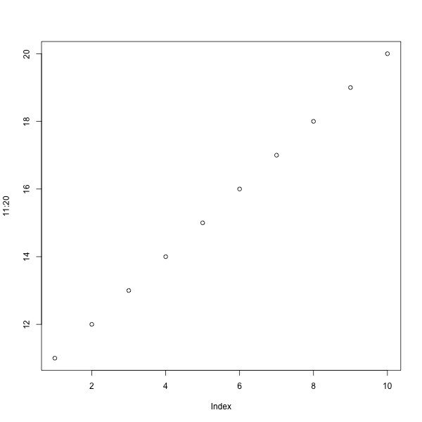
関数の描画
関数 plot()
1変数関数の描画を行う
基本書式
plot(x, y=0, to=1, ...)
x: 1変数関数 (関数名)y: \(x\) 軸の左端 (fromでも良い)to: \(x\) 軸の右端...: “ベクトルの描画”と同じオプションが利用可能
別の関数
fを重ね書きする場合は以下を実行するcurve(f, add=TRUE, ...)
例: graph-plot.r
### 関数の描画 plot(sin, 0, 4*pi, col="blue", # グラフの線の色 lwd=2, # グラフの線の太さ ylab="sin/cos" # y軸のラベル ) curve(cos, add=TRUE, # グラフを上書き col="red", lwd=2) x <- seq(0, 4*pi, by=0.1) y <- sin(x) + rep_len(c(-0.2, 0.1), length(x)) points(x, y, col="green", pch="*") # 点を追加. pchは点の形を指定
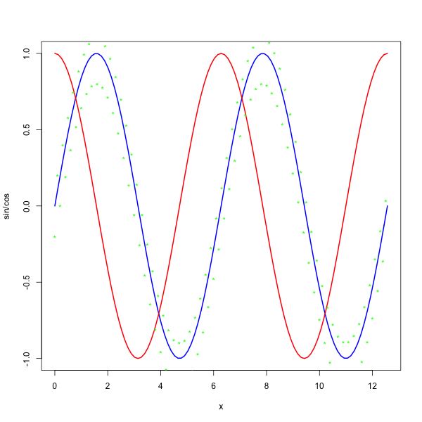
例: graph-plot.r
### データ点の描画 plot(x, y, type="p", pch="x", ylim=c(-2,2)) # ylimで値域を指定 curve(sin, add=TRUE, col="orange", lwd=2) lines(x, y, col="blue") # 折れ線を追加
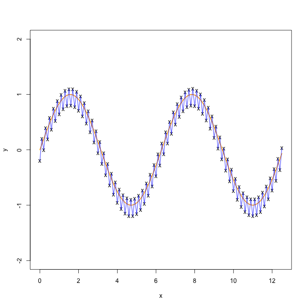
散布図
- 2種類のデータ \(x_1,\dots,x_N\) および \(y_1,\dots,y_N\) が与えられたとき， 同じ index を持つ点 \((x_1,y_1),\dotsc,(x_N,y_N)\) を 平面上に描画した図
関数 plot()
散布図を作成する
基本書式
plot(x, y=NULL, ...)x: 1種類目のデータ \(x_1,\dots,x_N\)y: 2種類目のデータ \(y_1,\dots,y_N\)...: “ベクトルの描画”と同じオプションが利用可能
関数 plot()
データフレーム x の変数A，Bの散布図を作成する
基本書式
plot(B ~ A, data=x, ...)
x: データフレームA,B: 変数名 (データフレームの列名)
- データフレーム
xに対してplot(x)を実行すると， すべての変数のペアに対する散布図が 作成される(散布図行列;pairs()後述)
例: graph-plot.r
### データフレームを用いた散布図 (airqualityを利用) plot(Ozone ~ Wind, data=airquality, pch="*", col="red", cex=2) # cexは点の大きさの倍率を指定
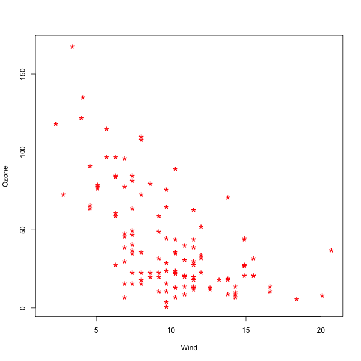
演習
- 前回配布した県別のデータ
jpdataを用いて婚姻・離婚率の散布図を描画せよ．- jpdata1-sjis/utf8.csv: 県別の対象データ
- jpdata2-sjis/utf8.csv: 対象データの内容
- jpdata3-sjis/utf8.csv: 県別と地域の対応関係
読み込み方は以下を参照．
jpdat <- read.csv(file="jpdata1-sjis.csv",fileEncoding="sjis",row.names=1) jpval <- read.csv(file="jpdata2-sjis.csv",fileEncoding="sjis") jpreg <- read.csv(file="jpdata3-sjis.csv",fileEncoding="sjis")
- 地方別に異なる点の形状を用いた散布図を描け．
- それ以外にも様々な散布図を描画してみよう．
グラフの文字情報
凡例の表示
関数 legend()
グラフに凡例を追加する
基本書式
legend(x, y=NULL, legend, ...)x,y: 凡例の位置を指定 (座標やキーワードで指定が可能)legend: 凡例の文字列ベクトル
- 次の実行例で見るように数式を扱うこともできる．
- 詳細は
help(plotmath)を参照
例: graph-legend.r
### 凡例の追加 f <- function(x) exp(-x) * cos(x) plot(f, 0, 2*pi, col="red", lwd=2, ylab="") g <- function(x) exp(-x) * sin(x) curve(g, lty=2, # グラフの線の形式 2は破線 add=TRUE, col="blue", lwd=2) legend(4, # 凡例の左上のx座標 1, # 凡例の左上のy座標 legend=c(expression(e^{-x}*cos(x)),expression(e^{-x}*sin(x))), lty=c(1,2), lwd=2, col=c("red","blue"), # パラメータはグラフに準拠 bty="n", # 凡例の枠線の形式(オプション) "n"は枠線なし y.intersp=2) # 行間の指定(オプション)
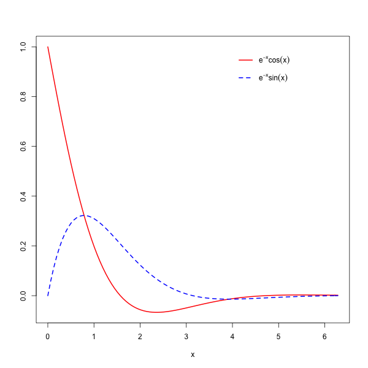
日本語に関する注意
日本語を含む図で文字化けが起こった場合
(主にMacOS)
関数
parのfamilyオプションでフォントを指定
ヒラギノ角ゴシックW4を指定する場合par(family="HiraginoSans-W4")
(数字を変えると太さが変わる)
- 以下のサイトなども参考になる
https://oku.edu.mie-u.ac.jp/~okumura/stat/font.html
graph-font.r
### 日本語フォントの指定 par(family = "HiraginoSans-W4") ### 2018年の東京の気候データによる例 mydat <- read.csv("example/tokyo_weather_2018_sjis.csv", fileEncoding="sjis") ## 月ごとの平均をプロットする (x <- aggregate(mydat[ ,-c(1,2)], by=list(月 = mydat$月), FUN=mean)) plot(x$気温, type ="b", lwd=3, col="green", ylim=c(0, max(x$気温)), xlab="月", ylab="", main="2018年気候データ", axes=FALSE) # 軸は後で axis(1, 1:12, 1:12);axis(2) # x,y軸の作成 lines(x$降水量, type="h", lwd=3, col="blue") lines(x$日射量, lwd=3, lty=2, col="red") abline(0, 0, lwd=2, lty="dotted") # y=0の線を引く legend(1, 25, legend=c("気温","降水量","日射量"), col=c("green","blue","red"), lwd=3, lty=c(1,1,2))
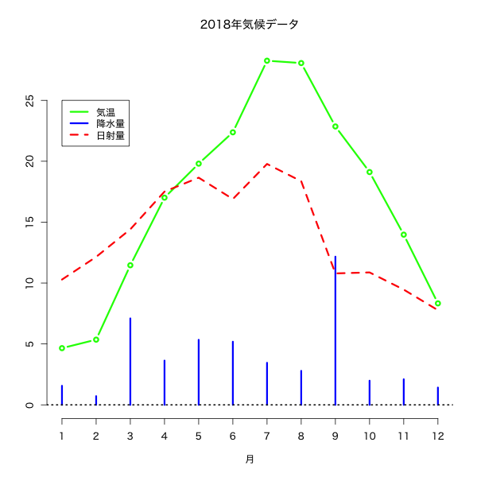
演習
- 前の演習で作成した散布図に凡例や日本語のタイトルを加えてみよ．
分布の視覚化
ヒストグラム
- データの値の範囲をいくつかの区間に分割し， 各区間に含まれるデータの個数を棒グラフにしたもの
- 棒グラフの横幅が区間に対応し, 面積が区間に含まれるデータの個数に比例するグラフを作成する
- データの分布の仕方(どのあたりに値が集中しているか, どの程度値にばらつきがあるかなど)を可視化するのに有効
関数 hist()
基本書式
hist(x, breaks, freq)
x: ベクトルbreaks: 区間の分割の仕方を指定． 数字を指定するとデータ範囲をその数字に近い個数に等分割する． 既定値はSturgesの公式． 詳細はヘルプを参照freq:TRUEを指定すると縦軸はデータ数，FALSEを指定すると縦軸はデータ数/全データ数．TRUE...: 関数plot()で指定できるオプションが利用可能
例: graph-hist.r
### 関数histによるヒストグラムの作図 mydat <- read.csv("example/tokyo_weather_2018_sjis.csv", fileEncoding="sjis") par(family = "HiraginoSans-W4") ### 基本的なヒストグラム # hist(mydat$気温) ### ビンの数を指定する場合 hist(mydat$気温, xlab="", ylab="頻度", breaks=25, # ビンの数を約25に設定 labels=TRUE, # 各ビンの度数を表示 col="green", main="2018年気温ヒストグラム")
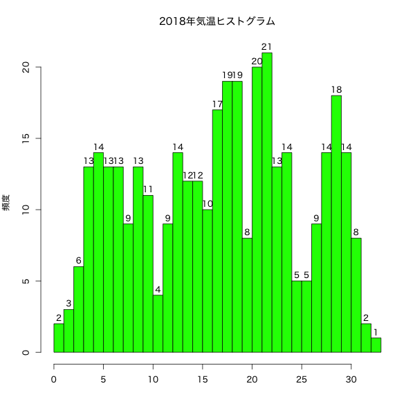
例: graph-hist.r
### 関数histによるヒストグラムの作図 mydat <- read.csv("example/tokyo_weather_2018_sjis.csv", fileEncoding="sjis") par(family = "HiraginoSans-W4") ### 密度での表示 hist(mydat$風速, freq=FALSE, # 全体に対する割合で表示 xlab="", ylab="密度", breaks=25, col="lightblue", border="cyan", # 長方形の境界の色 main="2018年風速ヒストグラム")
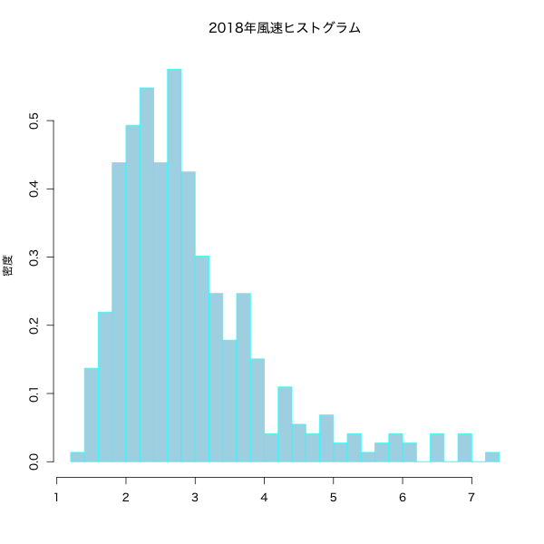
箱ひげ図
- データの中心，散らばり具合および外れ値を考察するための図 (ヒストグラムの簡易版)
- 複数のデータの分布の比較の際に有効
- 太線で表示された中央値(第2四分位点)
- 第1四分位点を下端・第3四分位点を上端とする長方形(箱)
- 第1四分位点・第3四分位点からそれぞれ箱の長さの1.5倍以内にあるデータのうちの 最小の値・最大の値を下端・上端とする直線(ひげ)
- ひげの外側のデータは点で表示される
関数 boxplot()
箱ひげ図を描画する
基本書式
boxplot(x, ...)
x: ベクトルまたはデータフレーム- ベクトルに対しては単一の箱ひげ図
- データフレーム対しては列ごとの箱ひげ図
...: 関数plot()と同様のオプションを指定可能
データフレーム
xの 変数Bを変数A(質的変数; 性別・植物の種類など)で分類する場合boxplot(B ~ A, data=x, ...)
例: graph-boxplot.r
### 関数boxplotによる箱ひげ図の作図 mydat <- read.csv("example/tokyo_weather_2018_sjis.csv", fileEncoding="sjis") par(family = "HiraginoSans-W4") ### 基本的な箱ひげ図 boxplot(mydat[ ,-c(1,2)]) # 月日は除く
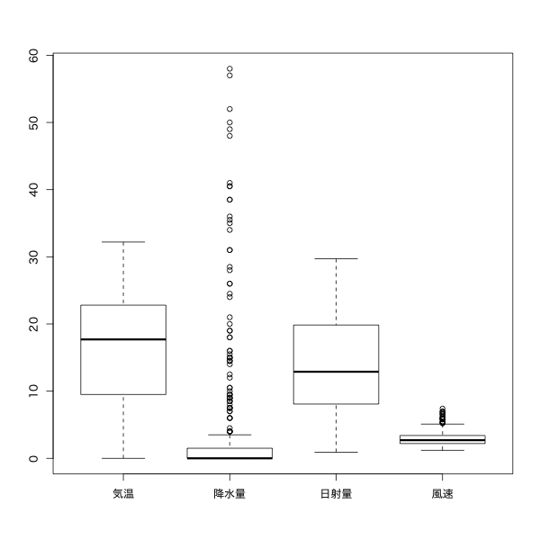
例: graph-boxplot.r
### 関数boxplotによる箱ひげ図の作図 mydat <- read.csv("example/tokyo_weather_2018_sjis.csv", fileEncoding="sjis") par(family = "HiraginoSans-W4") ### 月ごとに気温を分類 boxplot(気温 ~ 月, data=mydat, col="orange", main="月ごとの気温") ### 図を回転 ## boxplot(気温 ~ 月, data=mydat, ## col="purple", main="月ごとの気温", horizontal=TRUE)

演習
jpdataを用いてヒストグラムや箱ひげ図を作成せよ． (タイトル・色などは適当に調節せよ)- 各変数のヒストグラム
- 地方ごとの各変数の箱ひげ図
など
さまざまな視覚化
棒グラフ
関数 barplot()
棒グラフを作成する
基本書式
barplot(x,width=1,space=NULL,beside=FALSE, legend.text=NULL,args.legend=NULL, ...)
x: ベクトルまたは行列 (データフレームは不可)width: 棒の幅space: 棒グラフ間・変数間のスペースlegend.text: 凡例beside: 複数の変数を縦に並べるか・横に並べるかargs.legend: 関数legendに渡す引数...: 関数plot()で指定できるオプションが利用可能
例: graph-barplot.r
### 関数barplotによる棒グラフの作図 mydat <- read.csv("example/tokyo_weather_2018_sjis.csv", fileEncoding="sjis") par(family = "HiraginoSans-W4") ## 月ごとに各変数の平均を計算 x <- aggregate(mydat[ ,-c(1,2)], by=list(月 = mydat$月), FUN=mean) ### 基本的な棒グラフ barplot(x[,2], # 棒の高さのベクトル col="slateblue", # 棒の色の指定 names.arg=x[,1], # x軸のラベル main=names(x)[2]) # タイトル
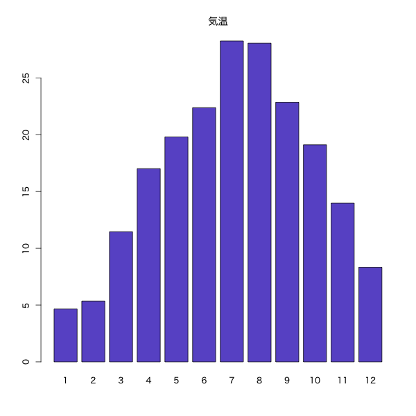
例: graph-barplot.r
### 関数barplotによる棒グラフの作図 ### 複数の棒グラフ par(family = "HiraginoSans-W4") barplot(as.matrix(x[ ,-1]), # 第1引数はベクトルまたは行列 col=rainbow(12)[c(8:1,12:9)], # 12色に色分け beside=TRUE, # 棒グラフを横に並べる space=c(1.5, 3), # 棒グラフ間・変数間のスペースを指定 legend.text=paste0(x[ ,1], "月"), # 凡例の指定 args.legend=list(ncol = 2)) # 凡例を2列にして表示
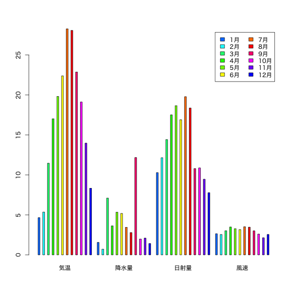
円グラフ
関数 pie()
円グラフを作成する
基本書式
pie(x, clockwise=FALSE, ...)x: ベクトルclockwise: 時計回りに書くか否か...: 関数plot()で指定できるオプションが利用可能
例: graph-pie.r
### 関数pieによる円グラフの作図 mydat <- read.csv("example/tokyo_weather_2018_sjis.csv", fileEncoding="sjis") par(family = "HiraginoSans-W4") z <- hist(mydat$日射量, breaks=5, plot=FALSE) # 5つ程度に分類 x <- z$count y <- z$breaks names(x) <- paste(y[-length(y)], y[-1], sep="-") ### 基本的な円グラフ ## pie(x, col=gray(seq(0,1,length=length(x)))) ### 向きと色を調整 pie(x, clockwise=TRUE, col=heat.colors(length(x),rev=TRUE), main="2018年日射量")
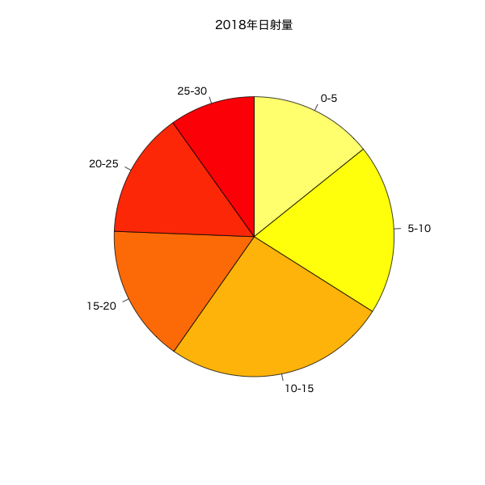
演習
jpdataを用いて棒グラフや円グラフを作成せよ． (タイトル・色などは適当に調節せよ)- 県別の男女の勤務時間を並べた棒グラフ
- 地方ごとの人口の比率の円グラフ
など
多次元の表示
散布図行列
関数 pairs()
散布図行列を作成する
基本書式
pairs(x, ...) plot(x,...)
(すべての列のペアに対する散布図を行列状に並べる)
x: データフレーム
変数
A1, \(\dots\),Ak(列名)のみ考える場合pairs(~ A1 + ... + Ak, data=x, ...) plot(~ A1 + ... + Ak, data=x, ...)
例: graph-pairs.r
### 関数pairsによる散布図の作図 mydat <- read.csv("example/tokyo_weather_2018_sjis.csv", fileEncoding="sjis") par(family = "HiraginoSans-W4") ### 基本的な散布図 ## pairs(mydat[,-c(1,2)], col="blue") ## plot(mydat[,-c(1,2)], col="blue")でも同じ図が描ける ### 表示する項目を指定 pairs(~ 気温 + 日射量 + 風速, data=mydat, col=rainbow(12)[mydat$月]) # 月毎に異なる色で表示
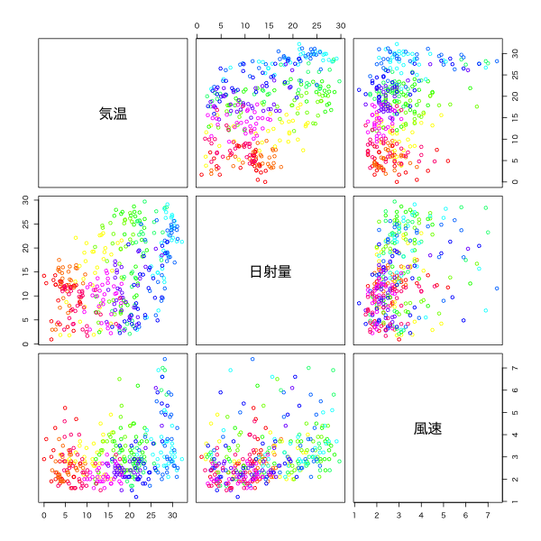
3次元のグラフ
関数 persp()
3次元のグラフを2次元に射影した俯瞰図を描く
基本書式
persp(x, y, z, theta=0, phi=15, expand=1)
x,y,z: \(x,y,z\) 座標
(zは 点(x[i],y[j])に対応する値を \((i,j)\) 成分とする行列で与える必要がある)theta,phi: 俯瞰の方向を指定する極座標expand: \(z\) 軸の拡大度...: 関数plot()で指定できるオプションが利用可能
例: graph-plot3d.r
### 関数perspによる2変数関数の俯瞰図 f <- function(x,y) x^2 - y^2 x <- seq(-3, 3, length=51) # x座標の定義域の分割 y <- seq(-3, 3, length=51) # y座標の定義域の分割 z <- outer(x, y, f) # z座標の計算 ### 基本的な俯瞰図 ## persp(x, y, z, col="lightblue") ### 俯瞰する向きを指定 persp(x, y, z, theta=30, phi=30, expand=0.5, col="royalblue", main = expression(z==x^2-y^2))
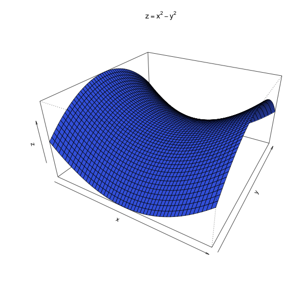
多様な3次元のグラフのためのパッケージがある．
以下は scatterplot3d() の例
基本書式
scatterplot3d(x, color, angle=40)
x: \(x,y,z\) 座標を指定するデータフレーム
(関数persp()のように直接指定することも可能)color: 色を指定(colではない). 既定値は黒angle: \(x\) 軸と \(y\) 軸の間の角度...: 関数plot()で指定できるオプションが利用可能
例: graph-plot3d.r
### 3次元散布図(パッケージscatterplot3dを利用) ## install.packages("scatterplot3d") # 初めて使う時に必要 require(scatterplot3d) # パッケージのロード mydat <- read.csv("example/tokyo_weather_2018_sjis.csv", fileEncoding="sjis") par(family = "HiraginoSans-W4") dat <- subset(mydat, select=c(風速, 日射量, 気温)) scatterplot3d(dat, pch=4, color="orchid")
演習
jpdataを用いて3次元の散布図を作成せよ．
その他
プロット環境の設定
関数 par()
プロット環境の設定(複数図の配置, 余白の設定)をする
基本書式
par(tag=value)tag: グラフィックスパラメータ
- プロットの際の線の種類や色, 点の形等の既定値を設定することができる
- 設定可能なグラフィックスパラメータは
help(par)を参照